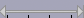

Timeline
From Audacity Manual
The Timeline displays a horizontal ruler above the tracks measuring time from zero (the start of the track). Depending on zooming the ruler may span minutes of audio or give a "close up" view of a few seconds or fractions of a second.
Legend for symbols displayed on the ruler
-  The selected region: (when present) is shown as a shaded region on the ruler. Pressing Play or Record on Transport Toolbar plays or records from the left edge of this region.
- Underneath the shaded region, the playback region is shown by thin left-pointing and right-pointing arrowheads connected by a line. This region will be played whenever the Play button is clicked.
- The editing cursor: (always present when there is no selected region) is shown as a black vertical line. When "Quick-Play" is not active, the playback start position cursor is attached to it . Pressing Play or Record plays from this cursor position.
{kind=link}
{kind=link}
-
 The playback cursor: (when playing or paused during play) is shown as a green triangle.
The playback cursor: (when playing or paused during play) is shown as a green triangle.
- The record cursor: (when recording or paused during record) is shown as a red triangle.
- Quick-Play region: A region in the Timeline that plays immediately when dragged with the mouse, even if audio is already playing elsewhere. It is shown by thick left-pointing and right-pointing arrowheads connected by a line. Quick-Play never modifies the position of the editing cursor or region in the waveform. To start "Quick-Play" of a region (even if the track is already playing or paused from playing), hover over the Timeline until the mouse cursor changes to a hand, then drag in either direction and release. Playback will continue to the end of the Quick-Play region.
- To make the dragged Quick-Play region loop (play repeatedly until stopped), press and hold SHIFT, drag in the Timeline then release the drag. Loop play will be indicated by the Play button in Transport Toolbar changing to Loop Play
 .
.
- If you just want to play from a particular point to the end of the project, click in the Timeline at the point from which you want playback to start or restart. The Quick-Play cursor is then shown only by a left-pointing arrowhead. Playback will continue to the end of the project.
- As with standard playback, you can press SPACE or click the Stop button
 to stop Quick-Play before the end of the region or project is reached.
to stop Quick-Play before the end of the region or project is reached.
- To make the dragged Quick-Play region loop (play repeatedly until stopped), press and hold SHIFT, drag in the Timeline then release the drag. Loop play will be indicated by the Play button in Transport Toolbar changing to Loop Play
- Play Region Lock: The position of the editing cursor or playback region (or the current position of the Quick-Play region or Quick-Play cursor) can be locked in the Timeline for use in all further standard playback. To do this, choose .
- When "Locked", the region or cursor position displays in red in the Timeline. A locked region or cursor is always used for standard playback (including Play-at-Speed) irrespective if the editing cursor or region in the waveform is at a different position.
- The locked region can be expanded or contracted by dragging either red arrowhead, then the next standard playback will use that new region. If you drag a new region in the Timeline then release, that new region will Quick-Play and will then be used for all further standard playback. Similarly if you click in the Timeline, the project Quick-Plays from there, and all further standard playback starts from there.
- To unlock the region or cursor position, so that all further playback respects the editing cursor or region in the waveform, choose .
Play Region Lock or Unlock may be performed even when the track is playing or paused from playing.
The Timeline is not active for Quick-Play whenever Audacity is recording.
Examples of the Timeline in use
|
|
|
|
|
|
|
For other methods of navigating to playback points or areas, see Playing and Recording.